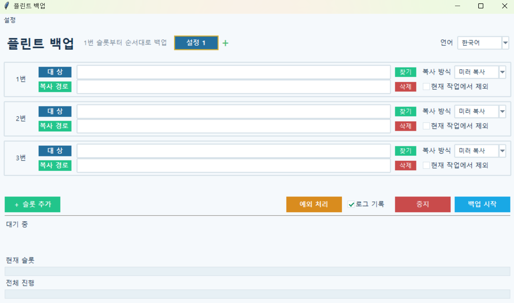

플린트 백업
버전: 1.0.0
Flint Backup
폴더나 파일을 지정한 위치에 미러 백업, 일반 복사 또는 ZIP 압축으로 보관하는 Windows용 백업 도구입니다.
여러 개의 백업 슬롯을 등록해 순서대로 실행할 수 있으며, 자주 사용하는 슬롯 구성을 최대 8개의 설정으로 나누어 저장하고 전환할 수 있습니다.
사용 방법
- 각 슬롯에서 백업할 폴더 또는 파일을 선택합니다.
- 백업 결과를 저장할 대상 경로를 선택합니다.
- 복사 방식을
미러,일반,ZIP중에서 선택합니다. - 필요한 경우 슬롯을 추가하거나
현재 작업에서 제외를 선택합니다. 백업 시작을 누릅니다.- 하단에서 현재 진행 수, 실제 복사 수, 재사용 수와 전체 진행률을 확인합니다.
복사 방식
미러: 원본과 동일한 구조를 유지하며 변경된 파일만 갱신하고 원본에서 삭제된 항목은 백업에서도 제거합니다. 변경되지 않은 파일은 가능한 경우 다시 복사하지 않고 재사용합니다.일반: 원본 파일과 폴더를 대상 위치에 복사합니다.ZIP: 원본을 ZIP 파일로 압축해 보관합니다.
Google Drive 같은 가상 드라이브에서 미러 백업을 사용할 때는 파일 크기와 수정시간을 우선 비교하고, 수정시간만 다른 경우에는 실제 파일 내용을 확인해 같은 파일을 불필요하게 다시 복사하지 않도록 처리합니다.
주요 기능
- 폴더 및 개별 파일 백업
- 미러 / 일반 / ZIP 복사 방식
- 변경되지 않은 파일 재사용을 이용한 증분 미러 백업
- 여러 백업 슬롯 순차 실행
- 최대 8개의 슬롯 설정 저장 및 전환
- 설정 이름과 색상 지정 및 순서 변경
- 슬롯 순서 변경
- 현재 작업에서 특정 슬롯 제외
- 현재 진행 수 / 복사 수 / 재사용 수 표시
- 현재 슬롯 및 전체 진행률 표시
- 처리 중인 파일 경로 표시
- SHA-256 정밀 검증 옵션
- 백업 중지
- 슬롯 및 프로그램 설정 자동 저장
- 창 크기와 위치 자동 저장
- 작업 로그 기록
- 한국어 / 영어 UI 지원
- 외부 패키지 없이 실행
실행:
python backup.py
참고:실행 파일(EXE) 버전을 사용하는 경우에는 python 명령을 실행할 필요가 없습니다.